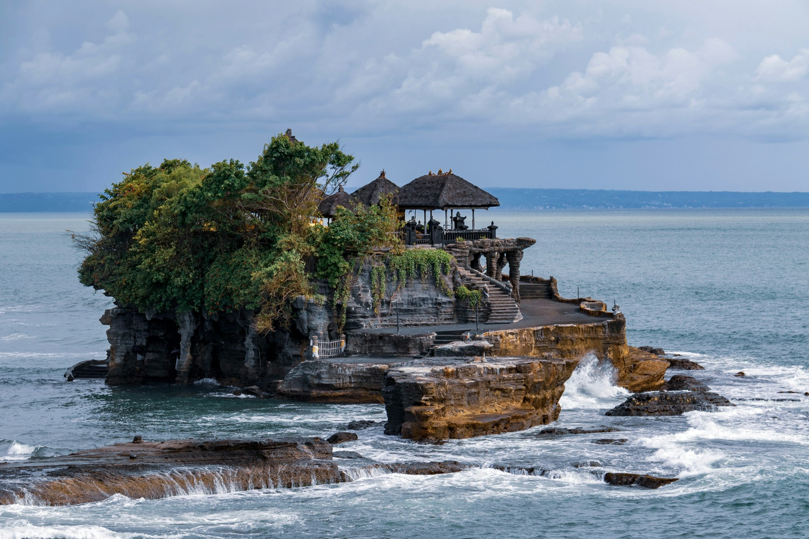
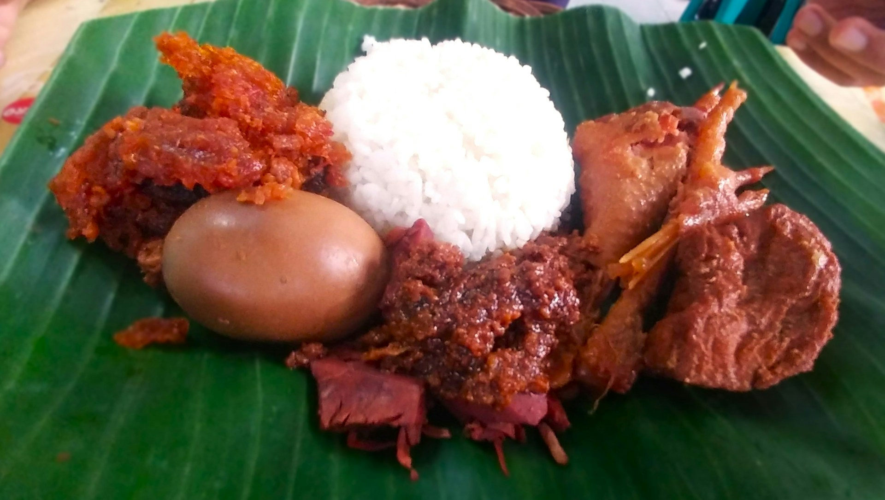

Menjelajahi Kuliner dan Destinasi Terbaik di Indonesia
Indonesia memiliki kekayaan budaya yang luar biasa, terutama dalam hal kuliner dan wisata. Dari Sabang sampai Merauke, banyak tempat menarik yang wajib dikunjungi dan makanan khas yang menggugah selera.
Dalam perjalanan kali ini, saya akan membahas beberapa destinasi wisata populer sekaligus kuliner khas yang patut dicoba ketika berkunjung ke sana.
"Makanan adalah cara terbaik untuk mengenal budaya suatu tempat. Setiap gigitan membawa cerita dan sejarah yang unik."
Mulai dari nasi goreng yang menjadi ikon kuliner Indonesia, hingga rendang yang telah diakui sebagai salah satu makanan terenak di dunia, semua memiliki keunikan dan cita rasa yang sulit dilupakan.
Destinasi Wisata Favorit di Pulau Bali
Pulau Bali adalah destinasi utama bagi wisatawan domestik dan mancanegara. Dengan pantai yang indah dan budaya yang kaya, Bali menawarkan pengalaman liburan yang tak terlupakan. Jangan lupa mencicipi babi guling yang terkenal di daerah ini.
Kuliner Jalanan yang Wajib Dicoba
Selain restoran mewah, kuliner jalanan juga sangat menarik untuk dijelajahi. Sate Padang, bakso Malang, dan gudeg Jogja adalah beberapa contoh makanan jalanan yang lezat dan harganya terjangkau.
Wisata kuliner seperti ini juga memungkinkan Anda berinteraksi langsung dengan penduduk lokal dan merasakan suasana asli dari tempat tersebut.
